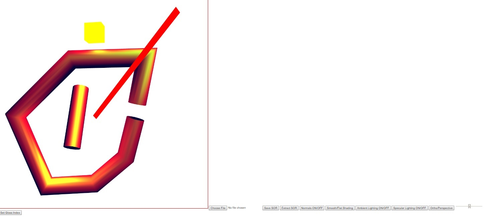

Name: Stephen Woodbury
Student ID: 1429496 : swoodbur
Submission For: Lab4
Date: 11/19/2017
Files Included: WoodburyStephenLab4Features.html, WoodburyStephenLab4Driver.html, WoodburyStephenLab4Driver.js, WoodburyStephenLab4Output.jpg, IOSOR.js
Assignment Details: Take prog3, Allow for zooming, camara movement, and panning
Additional Features: None
Notes: Performs as specified. My updated submission. Everything moves smoothly as you transform objects and as you pan the camera, zoom, and more. Note that if you are moving your mouse even slightly when you click the canvas to generate a point, a point won't be generated. You need to keep the mouse still when you click. Also check out the lighting for the point light. I've recalculated the lighting several times now to make sure I'm making no error. However, it still looks off to me. I coudln't say why though. Also, saving and loading works, but the colors get messed up. That being said, to save and load, I had to modify IOSOR, so I am submitting that. I calculated what I need on lab4 to get an A- in the Lab section of the class and I need a 72%, I would try and tackle the bonus, but I've another big assignment due tomorrow night. If I fall short of the necessary 72% and if there's anything I can do to get to a 72%, let me know. Thanks!
WoodburyStephenLab4Output: Multiple GC's (transformed), panned, and zoomed
Link to Driver : WoodburyStephenLab4Driver.html